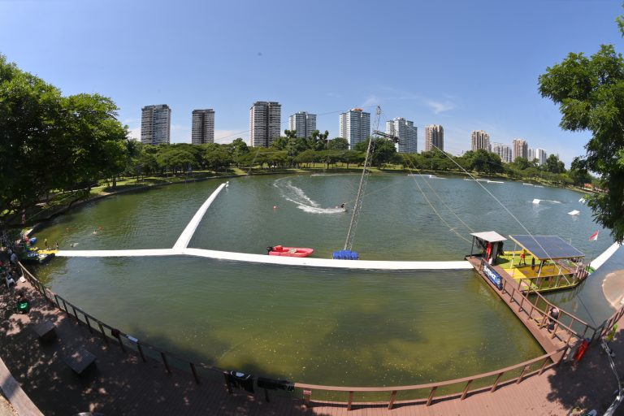
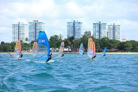
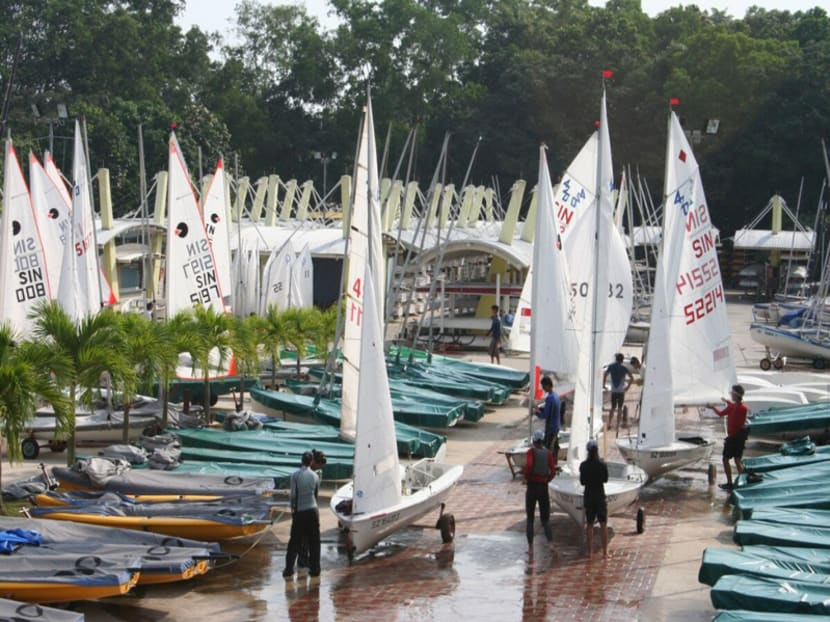
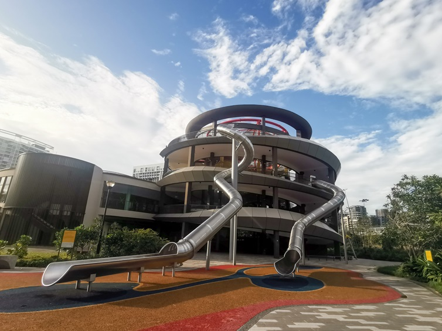

East Coast Park is a beach and a park encompassing Marine Parade, Bedok and Tampines, along the southeastern coast of Singapore.
The 185-hectare (460-acre) East Coast Park is the largest park in Singapore, and is built entirely on reclaimed land with a man-made beach, where swimming is possible.

Singapore Wake Park is the country’s only cable ski park built in a lagoon at Singapore East Coast Park. It ensures a safe environment for both beginners and experienced riders looking for an adrenaline fix.
Promising all level of fun and challenges, the park features three cable-systems. One full size- cable system for the experienced riders and two straight-line System 2.0 for the complete novice and intermediate riders from as young as six years old.
Whether you’re looking for a full day of fun with friends or some precious family bonding time, Singapore Wake park is your high-energy playground and chill-out sport or combined into one lifestyle destination.
PRICING
System A (Beginner)/ B (Intermediate): $50 / hour
System C (expert): $80 / 3 hours

Aloha Sea Sports Centre inherits the turf & spirit of East Coast Sailing Centre, which thrived in the 80s and 90s and was the largest windsurfing club in the world at one point. The passion continues in Aloha today, with a team of passion-driven water sports enthusiasts running the place. Our core business is to promote a wide range of non-motorised sea sports from Sailing, Windsurfing, Windfoiling, Stand Up Paddling and other open sea paddling sports.
Our facility set up includes provision of sea sports courses, equipment rentals, sheltered storage for personal paddle crafts/boards, windsurfing boards and sailing dinghies.
PRICING
Windsurfing: $30-60 / hour (depending on level)
Stand Up Paddling: $30 / hour
Laser Sailing: $60 / hour

SingaporeSailing is the national governing body overseeing all sailing activities in Singapore, bringing the joy of sailing to all Singaporeans, young and old.
There are programmes organised for kids and adults, to build confidence and awareness in a Sailing environment. Regattas are often held in this area, and open for all to spectate.

Located at Area B of East Coast Park, at the former Big Splash site, the 4.5ha Coastal PlayGrove is the latest family-friendly destination at East Coast Park that has everything you need for a day of endless fun.
Take on the Play Tower, which is Singapore’s tallest outdoor play feature, featuring 4-storey vertical net play area called the Vertical Challenge, and slides on the third and fourth floor. The latter being the tallest outdoor slide in Singapore. The water play area guarantees fun for children as they run through the numerous water jets and splash around the wading pool and streams. Children can also reconnect with nature and engage each other in spontaneous play at the nature playgarden flushed with greenery.
Coastline Leisure is a bicycle and skate rental company in sunny Singapore with branches streamed along the perimeters of local parks and coasts. Located along East Coast Park and with our latest outlet just a few metres away from the bridge linking to Gardens By The Bay, bicycle and skates rental is made easy at our kiosks, ready for exploration and cycle experience along eastern coastal park connectors and around the heart of Singapore.
Our range includes children learning bicycles, adult single and double bicycles, adult learning bicycles, family bicycles and various fun-bikes, all of which are available for event rentals.
PRICING
Normal Bicycle: $15 / 1st hour
Family Bicycle: $40 / 1st hour
Roller Blades: $18 / 1st hour
Fancy tucking into your meal while enjoying the gentle sea breeze and a scenic ocean view? Then make a beeline for the perennially popular East Coast Lagoon Food Village. Located just steps from the beach, it’s where you can fuel up after a day at East Coast Park. Many stalls here open relatively late, too, making it a go-to supper haunt for the area’s residents.
Whether you’re in the mood for glistening, succulent chicken wings, comforting bowls of soup or expertly prepared oyster omelettes, East Coast Lagoon Food Village have unlimited joints worth patronising on your next visit to this tranquil seaside spot.
Immerse yourself into nature and its works with a good cup of specialty coffee at this cosy cafe situated in the heart of Marine Cove. The menu consists of your standard brunch fare with a twist, and the most interesting dish that stands out has to be their sourdough waffles — a soft and chewy waffle made with sourdough with the option to choose between sweet or savoury toppings.
There’s also an indoor play area to entertain the kids while you have your meal, making this a family friendly spot that anyone can enjoy!
Coastal Rhythm is the Park’s cafe and bar, perfectly positioned between the open sea and our lagoon with plenty of sea-breeze coming through. Take a break in between your cable-ski sessions, or chill-out with family and friends when you want to get away from the city, and take in an uninterrupted view of the lagoon.
We promise generous servings of delicious food to fill up hungry stomachs after spending all your energy at the Park. Western favorites are all freshly prepared upon order in the kitchen. Best consumed with a refreshing glass of your favorite beverage to pair with your scrumptious meal.
JUMBO Seafood is where it all began. Our most prominent brand had humble beginnings in 1987, operating from a single outlet (now our flagship restaurant) in East Coast Seafood Centre. The restaurant soon gained a loyal following, garnering a reputation for serving only the freshest seafood cooked to perfection, with iconic dishes such as the Singapore Chilli Crab and Black Pepper Crab capturing the hearts of local and overseas gastronomes.
Underpinning its success is a simple philosophy. JUMBO Seafood thrives on doing what it does best - bringing diners the best seafood cuisine Singapore has to offer.
The old McDonald’s @ East Coast Park was one of the most popular fast food outlets in Singapore. When McDonald’s returned to the redeveloped Marine Cove with a fresh concept store, the crowd returned as well. It is one of the reasons why many people gather in Marine Cove.
McDonald’s at Marine Cove is spacious with an air-conditioned dining area as well as a non-air conditioned space overlooking the children’s playground.